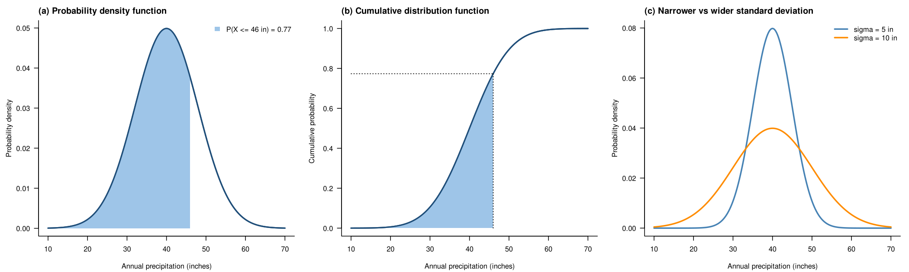
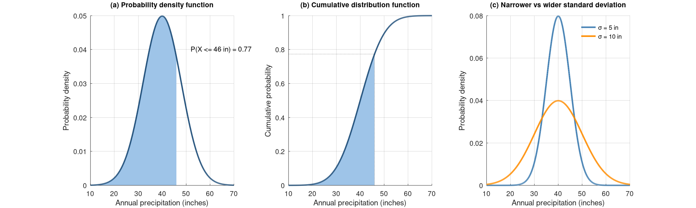

Chapter 3 · Precipitation
Figures 3.21 and 3.22: normal PDF and CDF of annual precipitation; effect of standard deviation
PDF and CDF of a normal distribution with shaded P(X <= x); PDFs with narrower and wider SD.
Source: Chapter 3 draft; parameters read from the draft figure (mean 40 in; sigma 5 and 10 in for Fig 3.22; sigma 8 in assumed for the Fig 3.21 schematic)
No external data file: values are small and embedded in the code.

Code: normal_distribution_pdf_cdf.py · image: figure_python.png
"""Figures 3.21 and 3.22: normal PDF and CDF of annual precipitation; effect of standard deviation
Chapter 3 draft; parameters read from the draft figure (mean 40 in; sigma 5 and 10 in for Fig 3.22; sigma 8 in assumed for the Fig 3.21 schematic)
Run: python3 normal_distribution_pdf_cdf.py -> figure_python.png"""
import numpy as np, matplotlib
from math import erf
matplotlib.use("Agg"); import matplotlib.pyplot as plt
pdf = lambda x, mu, sd: np.exp(-0.5 * ((x - mu) / sd) ** 2) / (sd * np.sqrt(2 * np.pi))
cdf = lambda x, mu, sd: 0.5 * (1 + np.vectorize(erf)((x - mu) / (sd * np.sqrt(2))))
mu, sd, xq = 40, 8, 46 # mean and SD (in); xq = example observation value
x = np.linspace(10, 70, 600)
fig, axs = plt.subplots(1, 3, figsize=(14, 4.2))
ax = axs[0]; ax.plot(x, pdf(x, mu, sd), color="#1f4e79", lw=2); m = x <= xq
ax.fill_between(x[m], 0, pdf(x[m], mu, sd), color="#9ec5e8", label=f"P(X ≤ {xq} in) = {cdf(xq, mu, sd):.2f}")
ax.set_title("(a) Probability density function", loc="left", fontsize=10); ax.set_ylabel("Probability density"); ax.legend(frameon=False)
ax = axs[1]; ax.plot(x, cdf(x, mu, sd), color="#1f4e79", lw=2); ax.fill_between(x[m], 0, cdf(x[m], mu, sd), color="#9ec5e8")
ax.plot([xq, xq], [0, cdf(xq, mu, sd)], "k:", lw=1); ax.plot([10, xq], [cdf(xq, mu, sd)] * 2, "k:", lw=1)
ax.set_title("(b) Cumulative distribution function", loc="left", fontsize=10); ax.set_ylabel("Cumulative probability")
ax = axs[2]
for s, c in ((5, "#4682b4"), (10, "#ff8c00")): ax.plot(x, pdf(x, mu, s), color=c, lw=2.2, label=f"σ = {s} in")
ax.set_title("(c) Narrower vs wider standard deviation", loc="left", fontsize=10); ax.set_ylabel("Probability density"); ax.legend(frameon=False)
for ax in axs:
ax.set_xlabel("Annual precipitation (inches)"); ax.grid(alpha=0.25)
for s in ("top", "right"): ax.spines[s].set_visible(False)
fig.tight_layout(); fig.savefig("figure_python.png", dpi=150)

Code: normal_distribution_pdf_cdf.R · image: figure_r.png

# Figures 3.21 and 3.22: normal PDF and CDF of annual precipitation; effect of standard deviation
# Chapter 3 draft; parameters read from the draft figure (mean 40 in; sigma 5 and 10 in for Fig 3.22; sigma 8 in assumed for the Fig 3.21 schematic)
# Run: Rscript normal_distribution_pdf_cdf.R -> figure_r.png (base R, no packages)
mu <- 40; sd <- 8; xq <- 46; x <- seq(10, 70, length.out = 600); m <- x <= xq
png("figure_r.png", width = 2100, height = 630, res = 150); par(mfrow = c(1, 3), mar = c(4.2, 4.5, 2.4, 1), las = 1)
plot(x, dnorm(x, mu, sd), type = "l", col = "#1f4e79", lwd = 2, bty = "l", xlab = "Annual precipitation (inches)", ylab = "Probability density")
polygon(c(x[m], rev(x[m])), c(dnorm(x[m], mu, sd), rep(0, sum(m))), col = "#9ec5e8", border = NA); lines(x, dnorm(x, mu, sd), col = "#1f4e79", lwd = 2)
legend("topright", bty = "n", fill = "#9ec5e8", border = NA, legend = sprintf("P(X <= %d in) = %.2f", xq, pnorm(xq, mu, sd))); mtext("(a) Probability density function", adj = 0, font = 2, cex = 0.8, line = 0.6)
plot(x, pnorm(x, mu, sd), type = "l", col = "#1f4e79", lwd = 2, bty = "l", xlab = "Annual precipitation (inches)", ylab = "Cumulative probability")
polygon(c(x[m], rev(x[m])), c(pnorm(x[m], mu, sd), rep(0, sum(m))), col = "#9ec5e8", border = NA); lines(x, pnorm(x, mu, sd), col = "#1f4e79", lwd = 2)
segments(c(xq, 10), c(0, pnorm(xq, mu, sd)), c(xq, xq), rep(pnorm(xq, mu, sd), 2), lty = 3); mtext("(b) Cumulative distribution function", adj = 0, font = 2, cex = 0.8, line = 0.6)
plot(x, dnorm(x, mu, 5), type = "l", col = "#4682b4", lwd = 2.2, bty = "l", xlab = "Annual precipitation (inches)", ylab = "Probability density")
lines(x, dnorm(x, mu, 10), col = "#ff8c00", lwd = 2.2); legend("topright", bty = "n", lwd = 2.2, col = c("#4682b4", "#ff8c00"), legend = c("sigma = 5 in", "sigma = 10 in"))
mtext("(c) Narrower vs wider standard deviation", adj = 0, font = 2, cex = 0.8, line = 0.6)
invisible(dev.off())

Code: normal_distribution_pdf_cdf.m · image: figure_matlab.png

% Figures 3.21 and 3.22: normal PDF and CDF of annual precipitation; effect of standard deviation
% Chapter 3 draft; parameters read from the draft figure (mean 40 in; sigma 5 and 10 in for Fig 3.22; sigma 8 in assumed for the Fig 3.21 schematic)
% Run: run normal_distribution_pdf_cdf.m -> figure_matlab.png (MATLAB or GNU Octave)
clear; close all;
mu = 40; sd = 8; xq = 46; x = linspace(10, 70, 600); m = x <= xq;
pdf_ = @(x, mu, s) exp(-0.5 * ((x - mu) / s).^2) / (s * sqrt(2 * pi));
cdf_ = @(x, mu, s) 0.5 * (1 + erf((x - mu) / (s * sqrt(2))));
figure('Visible', 'off', 'Position', [100 100 1400 420], 'Color', 'w');
subplot(1, 3, 1); hold on;
patch('XData', [x(m) fliplr(x(m))]', 'YData', [pdf_(x(m), mu, sd) zeros(1, sum(m))]', 'FaceColor', [0.62 0.77 0.91], 'EdgeColor', 'none');
plot(x, pdf_(x, mu, sd), '-', 'Color', [0.122 0.306 0.475], 'LineWidth', 2); ylabel('Probability density'); title('(a) Probability density function', 'FontSize', 10);
text(52, 0.04, sprintf('P(X <= %d in) = %.2f', xq, cdf_(xq, mu, sd)));
subplot(1, 3, 2); hold on;
patch('XData', [x(m) fliplr(x(m))]', 'YData', [cdf_(x(m), mu, sd) zeros(1, sum(m))]', 'FaceColor', [0.62 0.77 0.91], 'EdgeColor', 'none');
plot(x, cdf_(x, mu, sd), '-', 'Color', [0.122 0.306 0.475], 'LineWidth', 2);
plot([xq xq], [0 cdf_(xq, mu, sd)], 'k:'); plot([10 xq], [1 1] * cdf_(xq, mu, sd), 'k:'); ylabel('Cumulative probability'); title('(b) Cumulative distribution function', 'FontSize', 10);
subplot(1, 3, 3); hold on;
h1 = plot(x, pdf_(x, mu, 5), '-', 'Color', [0.275 0.51 0.706], 'LineWidth', 2.2); h2 = plot(x, pdf_(x, mu, 10), '-', 'Color', [1 0.549 0], 'LineWidth', 2.2);
legend([h1 h2], {'\sigma = 5 in', '\sigma = 10 in'}); legend boxoff; ylabel('Probability density'); title('(c) Narrower vs wider standard deviation', 'FontSize', 10);
for k = 1:3, subplot(1, 3, k); xlabel('Annual precipitation (inches)'); box off; grid on; set(gca, 'GridAlpha', 0.2); xlim([10 70]); end
print('-dpng', '-r150', 'figure_matlab.png');